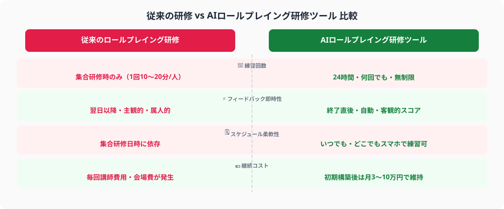
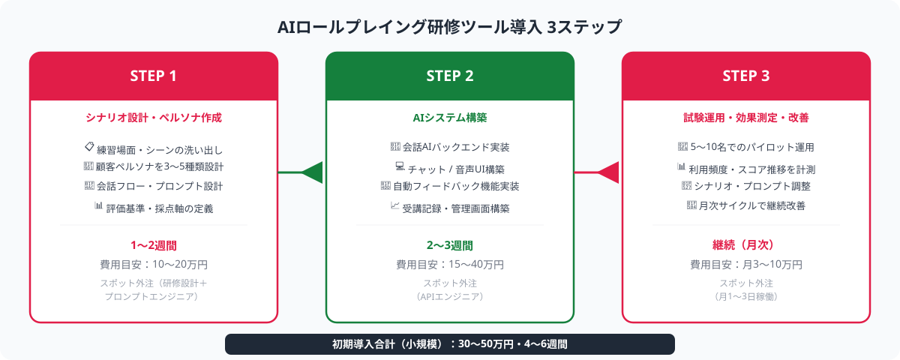

なぜ従来の研修では営業・接客スキルが身につきにくいのか
AIが「顧客」「クレーム客」「難易度の高い交渉相手」などのロールを演じ、受講者が実際に対話することで営業・接客スキルを実践形式で鍛えられるシステムのこと。会話終了後にAIが自動でフィードバック（表現の強弱・論点の網羅性・提案の適切さ等）を生成する機能を持つものが主流。ChatGPT APIなどの大規模言語モデルを活用して構築される。
営業・接客スキルは、「読んで覚える」知識ではなく「繰り返しの実践」によって身につくものです。しかし従来の研修には、実践量を増やすことを妨げる構造的な課題があります。
- 練習機会の絶対量不足：集合研修は半日〜1日に限られ、1人あたりの実際のロールプレイ時間は10〜20分程度。場数が少なすぎて「慣れ」が生まれない
- ベテラン社員への依存：ロールプレイの相手役ができる熟練者の時間は希少で、新人・中途入社者のトレーニングに十分に割けない。相手役の力量差で練習の質にばらつきが出る
- フィードバックの遅れと属人性：上司・トレーナーからのフィードバックが主観的になりやすく、「今日の振り返り」が翌日以降になることも多い。即時フィードバックがないと修正サイクルが遅くなる
- 失敗への心理的ハードル：上司や同僚の前での練習は緊張感が高く、失敗しながら試行錯誤することを避けがちになる。AIが相手なら何度失敗しても気兼ねなく練習できる
AIロールプレイング研修ツールは、これらの課題を「AI相手役の無制限活用」によって一気に解決します。受講者は業務後・休憩中・自宅からもスマートフォンで練習でき、終了直後に客観的なフィードバックを受け取ることができます。2026年現在、製造業・保険・不動産・接客サービス業を中心に、AIロールプレイング研修の導入事例が急速に増えています。

AIロールプレイング研修ツールを導入する3ステップ
ステップ1｜研修シナリオ設計・AI相手役ペルソナ作成をスポット外注で行う
AIロールプレイング研修の品質は「シナリオと相手役ペルソナの精度」で決まります。最初のステップは、実際の営業・接客現場で起きる典型的な場面を洗い出し、AIが演じる顧客キャラクターとその会話の流れを設計することです。
スポット外注に依頼するシナリオ設計の内容
- 場面・シーン分類の洗い出し：初回商談・提案プレゼン・価格交渉・クレーム対応・失注後のフォロー等、自社の営業・接客プロセスに合わせた練習場面を整理する
- 顧客ペルソナの設計：「すぐ断る疑い深い顧客」「複数社を比較検討している顧客」「予算に制約がある担当者」など、難易度別に3〜5種類のペルソナを定義する
- 会話フローとAIプロンプト設計：各シナリオでAIがどのように反応するか（問い返し方・抵抗の見せ方・合意への誘導）をプロンプトとして設計する。プロンプトエンジニアのスキルが問われる工程
- 評価基準の定義：会話後のフィードバックで何を評価するか（課題提示の明確さ・共感表現の有無・次ステップの提案力等）を定義し、AIが自動採点できる形式に落とし込む
① 新人・中途入社者が最初にぶつかる「最初の壁」シーン（例：断られたときの切り返し）
② ベテラン社員に「センスが必要」と言われている場面（暗黙知が潜んでいる）
③ 失注率が高い特定フェーズ（商談録音・CRMデータから特定できる）
④ コンプライアンス上のリスクがある場面（保険・金融・医療業種で特に重要）
このステップのスポット外注費用目安は10〜20万円・1〜2週間です。研修設計の経験者とプロンプトエンジニアが協働するため、社内で手探りで設計するより格段に精度の高いシナリオが短期間で完成します。既存の研修資料や商談録音があれば、それをインプットとして質を高められます。
ステップ2｜AIロールプレイングシステムをスポット外注で構築する
設計したシナリオをもとに、実際に動くAIロールプレイングシステムを構築します。ChatGPT API・Claude API等を活用し、受講者がブラウザやスマートフォンから使えるチャット形式のUI（もしくは音声対話型）を実装します。
ChatGPT・Claude等の大規模言語モデルのAPIを社内システムと組み合わせ、特定の役割（顧客・クレーム客等）を演じる会話AIを構築する手法。既成の研修SaaSと異なり、自社の商材・業界固有の顧客像に合わせたシナリオをゼロから設計できる。2026年時点でAPI費用は月数千〜数万円規模で収まるケースが多い。
スポット外注に依頼するシステム構築の内容
- 会話AIのバックエンド実装：ステップ1で設計したプロンプトを組み込んだAPI連携処理を実装する。シナリオ切り替え・難易度設定・セッション管理を含む
- チャットUI（またはボイスUI）の構築：受講者がPCブラウザ・スマートフォンから手軽に使えるインターフェースを実装する。テキスト型と音声型（音声認識＋TTSを組み合わせ）の2通りから選択可
- 自動フィードバック機能の実装：ロールプレイ終了後に、会話ログをもとにAIが自動でフィードバックレポートを生成する機能を実装する（ステップ1で定義した評価基準を使用）
- 受講記録・ダッシュボードの実装：誰がいつ何回練習したか、スコアの推移をどう見るかを管理者が確認できるシンプルな管理画面を実装する

このステップのスポット外注費用目安は15〜40万円・2〜3週間です。既成SaaSでは実現できない「自社の商材・業界固有の顧客像」に特化したシステムが、スポット外注なら比較的低コストで構築できます。音声対話型（TEXT-TO-SPEECH＋音声認識）を選ぶ場合はテキスト型より10〜20万円ほど追加がかかります。
ステップ3｜試験運用・効果測定・シナリオ改善をスポット外注で繰り返す
初期版のシステムが完成したら、実際の営業・接客スタッフ（まず5〜10名程度）に2〜4週間使い始めてもらいます。試験運用を通じて「AIの返答が不自然に感じるシーン」「難易度が高すぎる・低すぎるシナリオ」「使いにくいUI上の問題」などが明らかになります。これらの改善をスポット外注で依頼しながら精度を高めていきます。
試験運用で確認すべき指標
- 利用頻度と継続率：1人あたりの週平均セッション数・2週間後の利用継続率。「使われなければ効果なし」のため、利用頻度の低いスタッフへのフォローも重要
- スコアの推移：同じシナリオを繰り返したときにスコアが上がっているか。上がらない場合はシナリオの難易度設定かフィードバックの内容を見直す
- 「苦手シーン」の分布：どのシナリオで多くの受講者がつまずいているかを集計し、現場でも同様の課題が発生していないか照合する
- 実績指標との相関：2〜3ヶ月後に商談の成約率・クレーム対応の顧客満足度スコアなどの実績指標と研修利用状況を対比し、効果を定量的に把握する
① 「週に3回以上練習したスタッフ」のスコア変化を可視化して社内で共有する
② ゲーミフィケーション要素（スコアランキング・バッジ）を管理画面に追加すると継続率が上がる
③ 管理者が「このシナリオを今週の必修課題に設定する」機能を使い、受け身でなく能動的な研修設計につなげる
試験運用フェーズのスポット外注は月3〜10万円・月1〜3日稼働が目安です。シナリオの追加・プロンプトの調整・UIの細かい改善を月次サイクルで依頼することで、研修システムを自社の成長に合わせて育てていけます。
費用・期間の目安（2026年）
スポット外注を活用したAIロールプレイング研修ツールの導入費用と期間は、対象業務の範囲・シナリオ数・音声対応の有無によって変わります。以下は2026年の市場水準をもとにした目安です。
① 小規模（シナリオ3〜5本・テキスト型・管理者機能なし）：4〜6週間、費用 30〜50万円
シナリオ設計10〜15万円＋システム構築15〜25万円＋試験運用調整5〜10万円
② 中規模（シナリオ10〜15本・テキスト型＋管理ダッシュボード）：6〜8週間、費用 50〜80万円
複数の業務場面をカバー、スコア推移・利用ログが管理画面で閲覧可能
③ フル機能（音声対話型・シナリオ20本以上・人事システム連携）：2〜3ヶ月、費用 100〜200万円
音声認識・TTS実装、eラーニングシステム（LMS）との連携、多言語対応を含む場合
月次メンテナンス（初期構築後）：月3〜10万円（月1〜3日稼働）
シナリオ追加・プロンプト調整・UIの細かい改善
既成のAI研修SaaSと比べた場合の優位点は「自社特化」です。既成SaaSは月額5〜20万円のランニングコストがかかる一方、汎用シナリオが中心で自社の商材・業界固有の顧客像には合わないことが多いです。スポット外注で自社専用ツールを構築すれば、初期費用はかかるものの2〜3年単位での総コストは既成SaaSより抑えられるケースも多くあります。
まずは「シナリオ設計フェーズのみ」（10〜20万円・1〜2週間）をスポット外注に依頼し、どの場面を優先すべきか・既存の研修資料が活用できるかを確認してから全体スコープを決めることをお勧めします。
ANKENで専門エンジニアを探す流れ
ANKENはAI開発・システム開発のスポット外注に特化したマッチングサービスで、ChatGPT API・Claude APIを活用した会話AIシステムの構築経験を持つエンジニアが複数登録しています。
- 無料相談（30分〜）：対象業務（営業・接客・カスタマーサポート等）・想定受講者数・既存の研修資料の有無・予算感をヒアリング。「AIに何ができるか分からない」状態からご相談いただけます
- エンジニアのマッチング：シナリオ設計（研修設計のプロ＋プロンプトエンジニア）とシステム構築の両方に対応できるエンジニア・チームを1〜3営業日以内にご提案します
- シナリオ設計フェーズからスタート：まず研修場面の洗い出し・優先シナリオの選定（1〜2日・10万円前後）から始めることで、構築フェーズの要件が明確になり全体コストを抑えられます
- フェーズ単位の継続依頼：設計→構築→試験運用改善の各フェーズをスポット単位で依頼でき、効果を確認しながら段階的に拡張できます
「どんなシナリオを作れば効果が出るか分からない」「既存の集合研修と組み合わせてどう使うべきか」という段階でも、ヒアリングを通じて最適な構成をご提案します。まずは相談ベースでお気軽にご連絡ください。
よくある質問
- Q. AIロールプレイング研修ツールはどの業種・職種に向いていますか？
- A. 営業・接客・カスタマーサポート・採用担当など「対話スキル」が成果に直結する職種に特に向いています。製造業・保険・不動産・小売・コールセンターでの導入事例が多い傾向です。
- Q. 既成のAI研修SaaSではなくスポット外注で構築する理由はなんですか？
- A. 既成SaaSは汎用シナリオが中心で、自社の商材・業界固有の顧客像には合わないことが多いです。スポット外注なら自社特化のシナリオと相手役AIを構築でき、2〜3年単位のコストも抑えられます。
- Q. 音声対話型とテキスト型のどちらを選ぶべきですか？
- A. 電話営業・対面商談の練習にはリアリティが高い音声型が効果的ですが、コストがテキスト型より20〜40万円ほど高くなります。まずテキスト型で効果を確認し、音声型へ移行する順序が現実的です。
まとめ
AIロールプレイング研修ツールの導入は、スポット外注の3ステップで実現できます。①シナリオ設計・AI相手役ペルソナ作成をスポットで依頼（10〜20万円）→②AIロールプレイングシステムをスポットで構築（15〜40万円）→③試験運用・効果測定・改善をスポットで繰り返す（月3〜10万円）、この段階的なアプローチで専任の研修担当者がいなくても、従来の集合研修では実現できなかった「無制限の練習環境」を整備できます。
「どんなシナリオが必要か分からない」「既存の研修と組み合わせてどう導入するか相談したい」という段階でも、ANKENへの無料相談からシナリオの優先場面の整理と全体スコープの確認を始められます。まずは30分の相談からお気軽にご連絡ください。